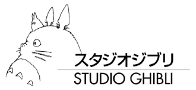

Mi web Ghibli
Bienvenida a mi web sobre las pelis del Studio Ghibli. A esta página web se le van a ir añadiendo extras con el paso del tiempo; ya sabes que a mí me me gusta dar ese extra, ese cariño, por encima de disimular el uso de ChatGPT. El fin justifica los medios, porque al final me gustan las cosas bien bonitas y no me puedo estar de ello por disimular lo obio. Además de buscar fuentes de texto adecuadas, poner una foto de perfil de pestaña y este apartado de introducción a la página web, he añadido como extra el apartado de película aleatoria, como el ejemplo en clase. Para las próximas entregas, tengo pensado poner música con un botón correspondiente para quitarla y que cada peli tenga un enlace para ver el tráiler correspondiente a la práctica.
"Que el cariño que tengo a las pelis se refleje en esta página web".